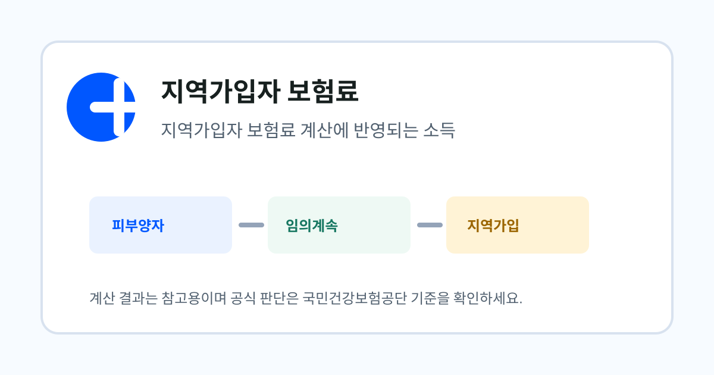

지역가입자 보험료
퇴사 후 소득이 줄었을 때 지역보험료 조정 전에 볼 것
퇴사 후 실제 소득은 줄었는데 지역보험료가 예상보다 높게 나오는 경우가 있습니다. 보험료가 어떤 소득 자료를 기준으로 계산됐는지부터 확인해야 조정 가능성을 판단할 수 있습니다.

- 지역가입자 보험료는 소득, 재산, 전월세 등 여러 자료를 함께 반영합니다.
- 소득이 줄었다는 사실만으로 바로 보험료가 낮아지는 것은 아니며, 반영 연도와 자료 종류를 확인해야 합니다.
- 조정이나 정산 문의 전에는 퇴사일, 소득 감소 자료, 고지서 부과월을 함께 준비하는 것이 좋습니다.
정보 이용 전 확인하세요
이 글은 퇴사자가 건강보험 선택지를 이해할 수 있도록 국민건강보험공단, 정부24, 국가법령정보센터 등 공개 안내를 바탕으로 정리한 민간 참고 자료입니다. 실제 고지액, 자격 취득일, 신청 가능 여부는 개인별 자료 반영 시점과 공단 심사 결과에 따라 달라질 수 있습니다.
소득이 줄었는데 보험료가 높게 보이는 이유
지역가입자 보험료는 현재 통장 잔액이나 이번 달 수입만으로 결정되지 않습니다. 공단이 확보한 소득 자료, 재산 과세표준, 전월세 자료, 세대 구성 등이 함께 반영됩니다. 그래서 퇴사 직후 실제 수입이 없더라도 이전 귀속연도의 소득 자료나 재산 자료 때문에 보험료가 예상보다 높게 보일 수 있습니다.
이럴 때는 먼저 고지서가 어떤 부과월의 보험료인지, 반영된 소득이 어느 연도의 자료인지, 사업소득이나 금융소득 같은 다른 소득이 포함되어 있는지 확인해야 합니다.
- 고지서 부과월
- 퇴사일과 자격 변동일
- 최근 소득금액증명 또는 원천징수 자료
- 사업소득·금융소득·연금소득 여부
- 재산세 과세표준과 전월세 자료
지역가입자 보험료는 소득만 보지 않습니다
국민건강보험공단의 지역가입자 부과체계 안내는 지역가입자의 보험료가 소득과 재산 등을 참작하여 세대 단위로 부과된다고 설명합니다. 즉, 퇴사 후 근로소득이 사라졌더라도 주택, 토지, 건축물, 전월세 보증금 같은 자료가 남아 있으면 보험료가 발생할 수 있습니다.
소득 감소를 이유로 조정 문의를 하더라도 재산 항목이 보험료의 주요 원인이라면 기대한 만큼 줄지 않을 수 있습니다. 계산기에서 소득을 0으로 넣어도 재산·전월세 입력값을 함께 넣어 비교해야 하는 이유가 여기에 있습니다.
조정 문의 전 준비할 설명
공단에 문의할 때 “퇴사해서 소득이 없습니다”라고만 말하면 담당자가 확인해야 할 범위가 넓어집니다. 퇴사일, 마지막 급여 지급월, 이후 사업소득 발생 여부, 프리랜서 계약 여부, 금융소득 규모, 현재 고지서 부과월을 함께 말하면 판단이 훨씬 빨라집니다.
소득 감소가 일시적인지 계속되는지, 이미 신고된 소득 자료와 실제 현재 상황이 어떻게 다른지도 정리해두세요. 특히 프리랜서나 개인사업 전환자는 소득 발생 시점과 지급 시점이 다를 수 있어 설명이 필요할 수 있습니다.
계산기 결과와 고지서가 다를 수 있는 지점
건보계산기는 사용자가 입력한 값을 기준으로 예상액을 보여주는 참고 도구입니다. 실제 고지서는 공단 보유 자료, 소득 귀속연도, 세대 구성, 감면, 정산 여부, 자격 취득일에 따라 달라질 수 있습니다.
따라서 계산기 결과가 낮게 나왔는데 고지서가 높다면 계산기가 틀렸다고 단정하기보다 입력하지 않은 재산·전월세 자료가 있는지, 고지서가 이전 기간분인지, 소득 자료 반영 시점이 다른지 먼저 확인하는 것이 좋습니다.
계산기로 연결하기
퇴사 전 보험료, 퇴사 후 소득, 재산, 전월세 자료를 함께 넣으면 지역가입자, 임의계속가입, 피부양자 가능성을 한 화면에서 비교할 수 있습니다.
퇴사 후 건강보험료 계산하기공식 확인 경로
작성: 건보계산기 편집팀 · 최종 검토: 2026-06-15